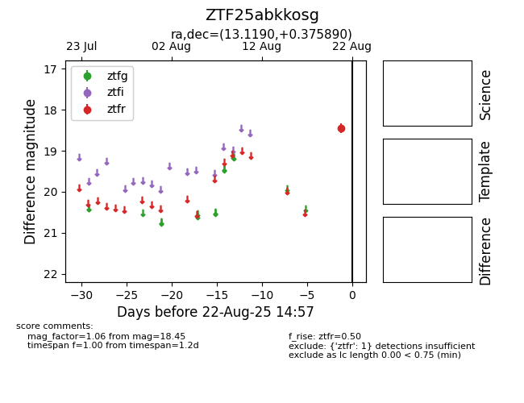

Target ZTF25abkkosg at 2025-08-22 14:57, see:
FINK: fink-portal.org/ZTF25abkkosg
Lasair: lasair-ztf.lsst.ac.uk/objects/ZTF25abkkosg
ALeRCE: alerce.online/object/ZTF25abkkosg
alt names
ZTF25abkkosg (ztf,alerce)
coordinates:
equatorial (ra, dec) = (13.1190,+0.37589)
galactic (l, b) = (123.4938,-62.49472)
photometry
last ztfr=18.45
1 ztfr detections
